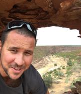

Put simply, we are a group of eager individuals from a range of completely different backgrounds all with the singular goal of completing our RMIT University Introduction to Information Technology module together.
We found ourselves with the capacity to understand and get along well with one another from almost day one, and we have been moving forward togther and growing as a unit as the weeks continue forward.
Our mission is simple: To deliver quality products and assignments and to achieve our collective personal goals as one group.
We believe that in order to understand what we represent as a group, we must first explain who we are as individuals.
Hello, my name is Alistair Mcleod (Al) and I make up 1/6 of The IT Crowd.
I am 34 years old with a long-term goal of changing careers and stepping foot into the world of IT. I was born and raised on Norfolk Island. Here I got my first taste of IT by completing a certificate III in information technology whilst completing year 12.
I have been working since leaving high school. I have never had a career specifically in the IT space however in my current line of work I am exposed to different IT systems/software every day. I have always had an interest in technology, keeping up with the latest releases and innovations in the space.
I am a long-time gamer, a hobby which dates back to the Super Nintendo Entertainment System. I follow both the NBA and NRL closely. I find it interesting to see how both sports have integrated themselves in the world of IT over the years. NBA most recently dipping their toes into the NFT (Non-Fungible Tokens) space.
Outside of sport I thoroughly enjoy photography focusing on both landscape and urban environments. I find the process of editing my photos equally enjoyable as actually taking them. I like the process of creating something and making it aesthetically pleasing. This is what has led me to pursue studies with the intent of learning web development.
Alistair's personality:
Myers-Briggs ISFP-T (Adventurer):
My personality type within a group context pushes me towards finding roles which allow me the freedom to complete tasks my own way. I struggle with being told exactly how something needs to be done without the possibility of exploring all creative avenues.
Overall, I am a very friendly and tolerant team member and will usually just get on with the work that needs to be done regardless of if I feel someone is not doing their fair share. Being more on the introverted side of the spectrum a leader type role within the group would feel the most unnatural to me. I work best when group members are acting as equals and coming together to discuss decisions rather than allowing a domineering personality to steer the ship.
Education Planner Learning Style
I am a Tactile learner based on my results of this test.
I learn best by touching and doing. I tend to learn better being hands on and being able to solve problems through trial and error. This style of learning came to the forefront when learning to put together my webpage in assignment one.
I found the trial and error process whilst learning/figuring out HTML very satisfying. I think my style of learning could be beneficial for the group when it comes to putting together a more comprehensive webpage for the next assignment given this is a more hands on task rather than theory/research based.
Big Five Personality Test
I have scored high in both Openness and Agreeableness. My score in the Agreeableness lends itself to my ability to meet other people on their level. I much prefer to work with someone to ensure our common goals are met rather than delegate.
In a group setting this will be beneficial as I am open and understanding to other members and will be ready to help others should they need assistance.
I have scored high in Openness also which is very much in line with my Myers Briggs score. I like to be able to explore all ways of completing a task rather than being boxed into a single way of thinking.
I hope this reflects when working with my team by being able to provide unique ideas and suggestions.

Brett Russell -s3634270
Dream Job: Manager of IT
My name is Brett Russell, I have recently turned 44 years of age.
I am married with two children and have been studying part time towards my Bachelor of Business (Supply Chain & Logistics) for the past 6 years. This Intro to IT unit is my last unit before finishing the degree.
The journey has been long but extremely rewarding and it has definitely helped me in my career. I have worked for 12 years at a Caterpillar Dealership as a manager of Supply Chain and more recently I moved into a smaller company where I was also the Supply Chain Manager, however my business studies were integral in me being promoted to General Manager 18 months ago.
I love to go camping with my family to remote areas mostly within Western Australia which has some beautiful landscapes and countryside.
An interesting fact about me is that I was lucky enough to represent Australia in cycling in the late 1990’s riding as the pilot of a tandem bicycle with a blind athlete riding on the back. My cycling partner at the time was completely blind and had a guide dog – travelling with him meant the guide dog also joined us on the plane and meant we always got issued the very front seats of the plane so the dog could lay at his feet.
Brett's personality:
Myers-Briggs ISFJ-A (Defender)
Hardworking and devoted, people with this personality type feel a deep sense of responsibility to those around them. Defenders can be counted on to meet deadlines, remember birthdays and special occasions, uphold traditions.
Defenders also have excellent analytical abilities and an eye for detail. And despite their reserve, they tend to have well-developed people skills and robust social relationships. Defenders are truly more than the sum of their parts, and their varied strengths shine in even the most ordinary aspects of their daily lives.
Gallup Strength Finder - (Strategic, Achiever, Futuristic, Individualization, Relator)
Instinctively, I work diligently to invent alternative courses of action. I notice new as well as unusual configurations in facts, evidence or data. Others, however, can see only separate, unrelated bits of information. I am fascinated by problems that puzzle, confound or frustrate most people. Chances are good that I am likely to be quite adept — that is, talented, skilled and knowledgeable.
It’s very likely that I labour tirelessly on whatever needs to be accomplished today. I am willing to change my plans when the people around me change theirs. I also ordinarily remain quite calm when others reverse their decisions, modify their schedules or cancel their appointments. Driven by my talents, I work diligently to discover how something functions.
Learning Style Quiz – Visual (45%)
A visual learner, learns by reading or seeing pictures, understands and remembers things by site. Usually neat & clean, however may have difficulty with spoken directions.
Christopher McLeod - s3971045
Dream Job: Digital Designer (Web and Interaction Designer)
I was born and raised on Norfolk Island which is a small Island located off the east coast of Australia.
I relocated to Brisbane after completing Year 12 to study a bachelor of Multimedia at Griffith University. There I learned the basics of programming languages such as HTML, JavaScript and how to program Lego Mindstorms. I have also delved into design tools such as Illustrator, Photoshop and InDesign.
My hobbies include: Listening to podcasts, I read a lot of articles, join in discussion online and watch YouTube videos endlessly when I’m trying to understand a new topic or idea. This helps me have a better understanding of how things work and how technology can shape the future.
I enjoy keeping up to date with current technology trends, especially before software and hardware enters the mainstream. I’ve always enjoyed fashion and more specifically the increasing intersection between fashion and technology.
I see this as an emerging market with wearable devices increasingly becoming a part of everyday life. I’ve started to delve back into programming as I start this new course to refresh my memory, whether it’s an app teaching me ‘Python’ or ‘Swift’, the core of each language is similar just with different commands.
Christopher's personality:
Myers-Briggs INTP-A (Logician)
Logicians pride themselves on their unique perspectives and vigorous intellect. They can’t help but puzzle over the mysteries of the universe – which may explain why some of the most influential philosophers and scientists of all time have been Logicians.
This personality type is quite rare, but with their creativity and inventiveness, Logicians aren’t afraid to stand out from the crowd.
Learning Style Quiz: Visual-ISFP Learner.
I am a Visual-ISFP learner (INTROVERTED SENSING FEELING PERCEIVING).
Just like most things in life, the results for me are not black and white. We all vary in the degree in how we adhere to each personality trait.
Sometimes an introvert, but I'm almost an extrovert. Sometimes somebody who is thinking is also very feeling.
Kellogg School of Management Creativity Test.
This test is summarised as a ‘test that helps you determine if you have the personality traits, attitudes, values, motivations, and interests that characterize creativity.
It is based on several years' study of attributes possessed by men and women in a variety of fields and occupations who think and act creatively.
Daniel Sodeman - s3977113
Dream Job: IT Manager
I am 32 and have been working in IT for the past 10 years
I currently work at the Department of the Premier and Cabinet, South Australia. I am studying Intro to IT and Intro to Programming at RMIT this term for entry to the Bachelor of IT.
I believe this will open up greater career opportunities and provide me some important skills. I have had an interest in IT since I was a kid and always grew up with computers all over the house.
I have had many LAN parties over the years and played many video games with my brothers growing up. I have been building computers for at least 15 years and enjoy keeping up to date with the latest technology in all areas of my life.
I love to follow sport – specifically Premier League and AFL, but I appreciate many others. My favourite teams are Arsenal and Port Adelaide.
Daniel's personality:
MYERS-BRIGGS test – INFP-T (Mediator)
I am someone who had a high number on the introversion score – this means in a group context I must come out of my shell and be vocal during meetings and on Teams chat.
My strategy is Constant Improvement which means that I strive to do the best work possible and will contribute as much as I can to a group. My Tactic is Prospecting which means that I am good at adapting in a group environment regarding tasks that need to be done.
BIG FIVE
The results show that I scored most highly on agreeableness – which means that I can be a positive member of a team who is friendly and helpful. My next highest trait was openness to experience – this shows I can be creative in a team context and open to new ideas from other team members.
My lowest score was extraversion – which confirms the results of the Myers Briggs test. Again, in a group context I must speak up at meetings and in the group chat.
VARK TEST
My learning style is multimodal which means that I prefer multiple ways of learning. My most preferred way of learning is kinesthetic – I prefer learning through experience and being part of a team.
My next preference for learning is read/write which means that I prefer to present information to others through writing – in terms of the group assignment I believe this is the best way I can contribute.
My least preferred method of learning is visual – which confirms that my emphasis when creating something is to focus on the written content rather than the visual design.
Jake Bone - s3974101
Dream Job: Fraud and Cyber Security Analyst
I am a 27-year-old male Caucasian Australian living in rural Victoria and currently studying an introduction to IT course with the intention being to continue my studies and turn my passion of IT into a full-time career.
I was originally a New Zealand Police Constable for around 4.5 years, and found criminal and forensic investigation with electronic devices incredibly fasicnating, with a lot of focus based on online cyber security and fraud prevention.
At some point I realised that my passion lied here, and upon returning home to earlier this year, I wanted to change and focus on getting a career based solely on this.
I'm an avid bird-lover and all-round nature enthusiast, whilst also maintaining a deep-love of all thing's tech related. Growing up, I fell in love with how I could learn anything via academic computer software and how I could communicate with my friends and loved ones via gaming together.
Whilst I haven’t had a career based solely on IT, I had been fortunate enough to use IT for tasks such as updating intelligence databases in real time and transmitting secure information over encrypted digital radio and telecommunication channels.
Jake's personality:
MYERS-BRIGGS test – ENFP-T (Campaigner)
To summarize what this means within a group perspective, I am someone who wants to ensure that I am contributing material to the group at the best of my ability, whilst ensuring that all my teammates are feeling comfortable to contribute and refine their ideas.
I like to think creatively when implementing ideas but can be prone to overthinking things.
I am certainly a "Feeling" person, with this being my highest score on the test. Those who use their feelings when making decisions tend to be more compassionate and understanding of others and consider how their decisions will impact others as a main priority.
BIG 5 FACTORS QUIZ
I show as having a moderate score of extroversion and an elevated level of agreeableness. This shows that I have a large amount of empathy towards others, which goes well and matches my extroversion levels.
Within a group situation, I will be a teammate who will ensure that everyone in the project is completing the task to the best of their ability, and if they are not, I’m someone who steps in to assist them in whatever needs to be done without judgement. However, this can often be to my detrement, as I will often step in to help and neglect my own tasks and responsibilities.
However, I'm someone who will see what I can do to help them in succeeding so we all can succeed.
LEARNING STYLES QUIZ
This quiz outlines that my predominant preferred style of learning is via a visual medium. This means, especially within a group setting, I will be using photos and other visual programs to deliver my messages, such as using PowerPoint presentations when delivering meetings and using video conference calls for communication with teammates to deliver my message in a way that I work well with.
I process information better in a visual format, meaning that graphs and physical demonstrations allow me to work best within my team.
Here is a quick example of some of skills that are required as outlined within our team video.
It's fortunate enough that two members, namely Brett and Daniel, both aspire to become IT Managers as their ideal career within the industry.
However, as for the remaining three members, both Chris and Alistair have similar preference in roles, with Chris having a focus more on webpage design and Alistair's dream job being based around developing and engineering a webpage's front and backend.
Jake's career choice differs as well due to him wanting to focus on fraud prevention and analysis and/or take up a job acting in cyber security.
There are similarities for each of these roles that each of their ideal candidates should possess, which includes:
-Experience and proficiency in using Microsoft Windows.
-Teamwork and communication skills, and;
-Problem solving skills.
It is also worth noting that each of these roles require a form of programming skill, such as CSS, JAVA, Python and SQL.
We are The IT Crowd!
Click here to view how our ideal jobs compare with the industry data.